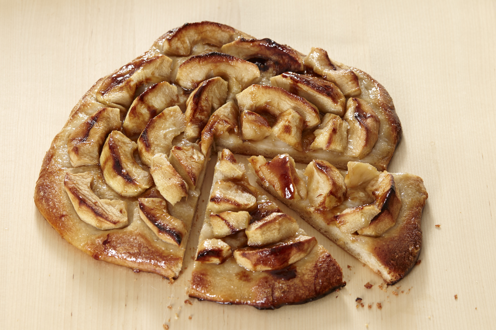

- ⅓ portion of NY style pizza dough (or any pizza dough, even store bought)
- ⅓ cup sugar
- 4tbs butter
- Strawberries or any similar fruit
- Any jam/jelly (I used mulberry)
- Salt
|
- Preheat oven to 450F
- Lightly dust pizza tray/peel with sugar
- Stretch prepared dough into pizza shape and place on tray/peel
- Slice strawberries ⅛-¼ inch thick
- Spread a thin layer of jam on dough
- Distribute strawberries evenly across dough
- Chop butter into small pieces and distribute evenly
- Top with ⅓ cup sugar
- Bake for ~40 minutes or until nicely browned
|

|